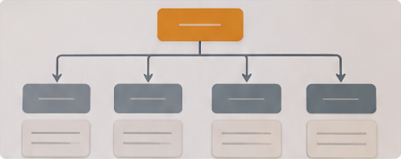
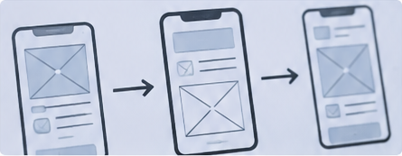

Information Architecture and Navigation
Explore how information and system features are organized to help users find content and navigate efficiently.

Interaction and Workflow Design
Understand how users interact with systems through actions, feedback, interface responses and task workflows.
Usability and UX Principles
Discover the principles that make interfaces easy to learn, efficient, consistent and satisfying to use.
Prototyping and Usability Evaluation
Learn how to create interface prototypes, conduct usability tests and evaluate results to improve the design.